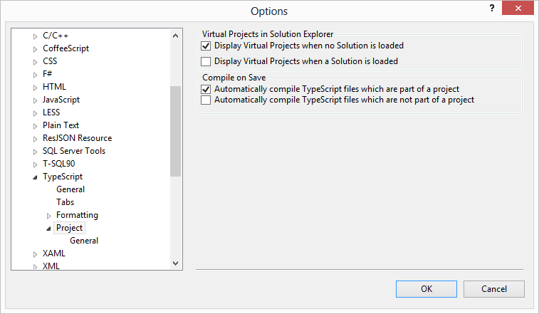

Frequently Answered Questions
What is the min version of TypeScript EndGate requires?
EndGate requires TypeScript version 0.9.0.1 - You can download it here.
Why is building pure EndGate JavaScript projects not documented or directly supported?
One of the drawbacks to pure JavaScript game development is as a project grows in size it gets unnecessarily harder to maintain. Therefore to encourage maintainable EndGate game projects the framework has been designed entirely around TypeScript. However, just because pure JavaScript examples are not documented or supported directly does not mean they are impossible to create. If you decide to do a pure JavaScript game and forego TypeScript I recommend looking at the generated JavaScript files in the EndGate samples to handle things such as object inheritance.
How do I setup my environment to use TypeScript?
- Download and install Visual Studio Update 2 (if it's not already installed).
- Download and install the latest TypeScript plug-in. Once installation has completed you'll be prompted to restart your computer.
- Once installed you should configure the TypeScript plug-in to compile your TypeScript files on save. Go to Tools > Options > Text Editor > TypeScript > Project and ensure that the following options are checked:

- Follow the steps located at http://stackoverflow.com/questions/14510511/how-can-i-install-typescript-with-visual-studio-2010-and-vista to install the latest TypeScript essentials
- Once installed you should configure the TypeScript plug-in to compile your TypeScript files on save. Go to Tools > Options > Text Editor > TypeScript > Project and ensure that the following options are checked:
- Visit the TypeScript homepage to get the latest information on using TypeScript with projects.
What is EndGate's browser support?
Browsers that support semi-advanced canvas functionality.
Where can I report an issue or get in touch with you?
Issues can be reported on the GitHub source page and if you'd like to get in touch you can always shoot over an email.
Why do circles in Chrome show up as squares?
This is actually a known issue for some of the 27.x Chrome versions. It has been reported Here.
Does EndGate support a 3d development API?
Currently EndGate does not support 3d games. However you'll notice several classes within the framework such as the Vector2d class that have the 2d postfix; these are here to allow for future additions for a 3d EndGate API, ex: a Vector3d class.